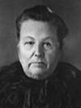
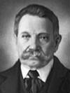

FRANÇOIS RIVET
fiche familiale
*******************************************************************************
François Rivet
Père: Joseph Rivet
Mère: Marie-Angélique Desmarais
Mariage le 13 octobre 1817
à St-Paul, cté Joliette.
Épouse:
Angélique Sibert Bélaire
décède à l'âge de 53 ans.
Naissance le 29 avril 1798 à St-Paul, cté Joliette.
Baptême le 6 mai 1798 à St-Paul de Joliette.
Parrain Augustin Racette,
marraine Marie Beaudoin épouse de Jacques Desrochers.
Décès le 6 septembre 1851
à St-Alphonse-Rodriguez, cté Joliette.
Sépulture le 8 septembre 1851 à St-Alphonse-Rodriguez.
Père: Joseph Sibert Bélaire
Mère: Angélique Lareau
*******************************************************************************
Enfant 1 François Rivet
décède à l'âge de 20 jours.
Naissance le 23 juin 1819 à St-Paul, cté Joliette.
Décès le 13 juillet 1819 à St-Paul, cté Joliette.
Sépulture le 19 juillet 1819 à St-Paul, cté Joliette.
-------------------------------------------------------------------------------
Enfant 2 Marie-Angélique Rivet
Naissance le 12 mars 1821 à St-Paul, cté Joliette.
Baptême le 12 mars 1821 à St-Paul de Joliette.
Parrain François Desautels-Lapointe,marraine Marie Bélaire.
-------------------------------------------------------------------------------
Enfant 3 Élisabeth Rivet
Naissance le 2 mai 1823 à St-Paul, cté Joliette.
Baptême le 3 mai 1823 à St-Paul de Joliette.
Parrain Joseph Sibert-Bélaire, marraine Angélique Chebrou.
-------------------------------------------------------------------------------
Enfant 4 Gilbert Rivet
Naissance le 2 mars 1825 à St-Paul, cté Joliette.
Baptême le 2 mars 1825 à St-Paul de Joliette.
Parrain Joseph Boulé, marraine Louise Sibert-Bélaire.
Mariage le 4 septembre 1843 à St-Ambroise de Kildare.
Conjointe: Marguerite Rivet
Père: François-Xavier Rivet
Mère: Marguerite Savoie
Mariage le 23 juillet 1872 à Notre-Dame de Montréal.
Conjointe: Flavie Laliberté
-------------------------------------------------------------------------------
Enfant 5 Domitilde Rivet
décède à l'âge de 84 ans.
Naissance 28 octobre 1826
Décès le 12 août 1911 à St-Côme, cté Joliette.
Sépulture le 14 août 1911 à St-Côme.
Mariage le 15 février 1847 à St-Alphonse-Rodriguez, cté Joliette.
Conjoint: Narcisse Gagné
Père: François Gagné
Mère: Louise Corbeille
Mariage le 20 mai 1884 à St-Côme.
Conjoint: Urgel Venne
Père: Baptiste Venne
Mère: Josephte Emery Coderre
-------------------------------------------------------------------------------
Enfant 6 Angèle Rivet
Naissance le 10 mars 1828 à St-Paul, cté Joliette.
Baptême le 10 mars 1828 à St-Paul, cté Joliette.
Parrain Joseph Rivet, marraine Rose Henry.
-------------------------------------------------------------------------------
| 
 |
Enfant 7 Angèle-Angélique Rivais Rivetdécède à l'âge de 82 ans. Naissance le 12 mars 1829 à St-Paul, cté Joliette. Décès le 6 janvier 1912 à St-Alphonse-Rodriguez, cté Joliette. (ses ancêtres)Mariage le 23 novembre 1847 à St-Alphonse-Rodriguez, cté Joliette. Conjoint: Joseph Rivet n. en février 1828 d. 8 avril 1914.
(sa famille) |
-------------------------------------------------------------------------------
Enfant 8 Joséphine Rivet Rivais
décède à l'âge de 22 ans.
Naissance en 1831 à St-Paul, cté Joliette.
Décès le 5 octobre 1853 à St-Alphonse-Rodriguez, cté Joliette.
Sépulture le 7 octobre 1853 à St-Alphonse-Rodriguez.
-------------------------------------------------------------------------------
Enfant 9 Elmire Rivet Rivais
Mariage le 4 septembre 1854
à St-Alphonse-Rodriguez, cté Joliette.
Conjoint: Maxime Gagné
Père: François Gagné
Mère: Isabelle Savoie
-------------------------------------------------------------------------------
Enfant 10 Urgel Rivet
Parrain d'Urgel Rivet de Laverlochère.
Mariage le 10 septembre 1866
à St-Alphonse-Rodriguez, cté Joliette.
Conjointe: Élodie Thériault
Père: Aimé Thériault
Mère: Aglaée Jeansonne
Mariage le 27 août 1872
à St-Alphonse-Rodriguez, cté Joliette.
Conjointe: Salomée Miron
Père: Urgel Miron
Mère: Justine Thouin
-------------------------------------------------------------------------------